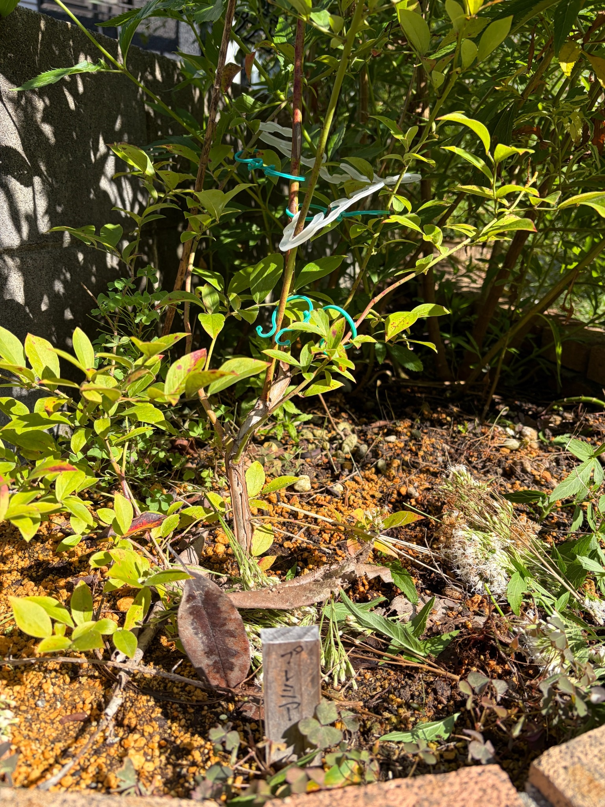

2026/10/16 地植えから10か月のプレミア。緑と黄緑の葉に、赤みや斑点が混じっています
昨年12月16日に庭へ地植えしたプレミアが、ちょうど10か月を迎えました。前回の9月22日からは24日がたっています。
今回も、枝には緑色や黄緑色の葉が残っています。その間には黄色みの強い葉や、赤み、赤褐色の斑点がある葉も見られ、一枚ずつ色や状態が違います。
株元からは褐色の幹が立ち上がり、そこから緑色や赤みのある枝が上や左右へ伸びています。葉だけでなく、幹から枝先へつながる姿もよく見える一枚になりました。
今年はプレミア、クライマックス、メンデイトの3品種とも実をつけ、収穫したブルーベリーをヨーグルトに混ぜておいしくいただきました。初めての収穫を楽しんだ後も、庭での生育は続いています。今回は、秋を迎えたプレミアの枝葉と株元を残しておきます。
9月22日から続く、緑の葉を残した姿
前回の9月22日には、緑色や黄緑色の葉を中心に、黄色みや赤みのある葉が混じっていました。葉の斑点や、株元から伸びる幹と枝の様子も記録しました。
10月16日の今回も、プレミアには緑を残す葉があります。中央付近には比較的大きな緑色の葉があり、上へ伸びる枝や右側へ広がる枝にも葉がついています。
手前や下の方では、明るい黄緑色から黄色に近く見える葉が目立ちます。その中に赤みのある部分もあり、緑だけでまとまった姿ではありません。
今回は日差しが強く、葉や枝に明るいところと濃い影ができています。前回より黄色く見える葉があっても、それがすべて葉色の変化によるものとは限りません。光の当たり方や撮影した向きも含めて眺めたいと思います。
24日間で葉が何枚減ったのか、どの枝がどれだけ伸びたのかまでは分かりません。それでも、9月から10月へ、同じ株の姿を続けて残すことができました。
秋を迎えても、緑色や黄緑色の葉が見られます
今回のプレミアは、株全体が赤く色づいた姿ではありません。緑色や黄緑色の葉があり、その中に黄色や赤みが混じっています。
中央の幹のそばには、広がった緑色の葉があります。右側へ伸びる枝にも葉が続き、枝先付近には小さな葉が集まっているところが見えます。
葉の向きはさまざまで、表面がよく見えるものもあれば、横を向いたり、ほかの葉と重なったりしているものもあります。日光を受けて明るく見える葉と、陰になって深い緑に見える葉が、同じ株の中にあります。
冬に植え付けたときには、葉の少ない部分から細い枝をたどっていました。今も枝は見えていますが、そこに緑の葉が加わり、植え付け当日とは違った印象です。
地植えした苗が季節を越し、実をつけ、その後も葉を残していることを、10か月目の姿として見ておきたいと思います。
下の枝には、黄色みの強い葉もあります
株の下の方や左手前には、黄色みのある葉が見られます。黄緑色の葉と黄色に近い葉が重なり、その間に緑を残した葉も混じっています。
一枚の葉の中でも、色がそろっているわけではありません。緑色や黄色の面に赤みが重なったもの、葉先や縁が赤褐色になったものがあります。
明るい日差しが当たると黄色が強く感じられますが、葉ごとの色むらも見えます。株全体を一度に見るだけでは気づきにくい違いが、低い枝を眺めると分かります。
前回にも黄色みや赤みのある葉はありました。今回の姿だけで急に変化したとは考えず、9月から続いている葉色の違いとして見ていきます。
これから緑の葉にも赤みが広がるのか、黄色みを残したまま落ちていく葉があるのか。次に眺めるときには、色だけでなく、どの枝に葉が残っているかも気になります。
赤みや赤褐色の部分が、一枚の葉の中に混じっています
手前の葉には、赤色や赤褐色に見える部分があります。葉先に赤みが集まったものもあれば、葉の面に斑点のように色が出ているものもあります。
左下寄りには、暗い赤褐色の部分と赤みのある縁が目立つ葉も見えます。一方、その周囲には黄緑色の葉があり、隣り合う葉でも状態が違います。
秋らしい色を感じるところですが、赤くなっている部分をすべて紅葉として受け止めてよいのかは分かりません。部分的な傷みや斑点も重なって見えるため、きれいに色づいたかどうかだけでは捉えにくい姿です。
緑から黄色、赤へと、株全体が同じ順序で変わっているようには見えません。葉ごとに違いがあり、一枚の中にも複数の色が混じっています。
その違いも含めて、今のプレミアの葉色として残しておきたいと思います。
斑点や葉先の変色にも、引き続き目を向けます
葉の一部には、赤褐色や暗い色の細かな斑点があります。右側の葉や手前の葉では、点状の変色や葉先・縁の色の違いが見られます。
9月5日、9月22日の記録でも、葉の斑点や黄色みについて触れました。今回も、すべての葉が傷みのない緑にそろっているわけではありません。
ただ、前回と同じ葉を一枚ずつ追えているわけではないので、斑点が広がったのか、別の葉の変色が見えているのかまでは分かりません。撮影する角度によって、目に入る葉も変わります。
今の姿だけから、暑さや乾燥、土の状態、病気など、どれか一つを原因として決めることはできません。葉色の違いと斑点が同時に見えるからこそ、簡単には判断せず、その後の様子も残していきたいです。
収穫できたことを喜びながらも、実を採った後の葉には気になるところがあります。収穫の結果と今の枝葉の状態を、それぞれ見ていくことが大切だと感じます。

株元から立ち上がる褐色の幹
中央には、株元から立ち上がる褐色の幹があります。表面には縦方向の筋や色の違いが見え、曲がりながら上の枝へつながっています。
前回も幹の表面の凹凸や、緑色の枝との違いが目に入りました。今回も、葉の間から幹の形が見え、株元から枝先へのつながりをたどれます。
日が当たる面は明るく、反対側には影ができています。そのため、幹の表面の筋や起伏がはっきり見えるところがあります。
こうした表面の様子だけで、幹が傷んでいる、あるいは異常があると決めることはしません。まずは今見えている特徴を残し、枝葉の変化と合わせて見ていきたいと思います。
葉が少なくなる季節には、今よりも幹や枝の形が分かりやすくなるかもしれません。そのときにも、今回の姿とつなげて眺められそうです。
上へ伸びる枝と、横へ広がる枝
幹から上をたどると、緑色や黄緑色の枝が立ち上がっています。赤みを帯びた枝もあり、太さや色には違いがあります。
中央付近には上方向へ伸びる枝があり、右側には斜めに広がる細い枝が見えます。左側や低い位置にも枝が伸び、株の形は上だけでなく左右にも広がっています。
枝の途中には、葉が集まっているところと、葉の間隔が空いているところがあります。葉が少ない部分では細い枝が見え、葉のある部分ではその向きや重なりが目に入ります。
写真の上側には、画面の外へ続く枝もあります。今回の一枚だけで株の高さ全体を測ったり、前回から伸びた量を比べたりすることはできません。
今は、上へ伸びる部分と横へ広がる部分が組み合わさった枝ぶりを、10月16日の姿として残しておきます。
枝の周りに見える、前回からの留め具
枝の周囲には、水色の留め具と白いクリップ状のものが見えます。9月の写真にも写っていたものが、今回も同じ株の周りにあります。
葉や枝が重なる中でも、これらが写っていることで、写真の中の位置関係をたどる目印になります。中央の枝や、その周囲の枝がどこへ続いているのかを眺める手がかりになります。
ただ、写真の見え方だけで、枝がどの程度固定されているのか、当たっている部分に負担があるのかまでは分かりません。留め具の位置と枝の様子は、別々に決めつけずに見ておきたいと思います。
枝が伸びたり太さが変わったりしたときには、こうした周囲のものとの位置関係も変わっていくはずです。株全体を眺めるとともに、枝の近くにも目を向けていきます。
同じ日のクライマックスとは、色の見え方が違います
同じ10月16日のクライマックスでは、桃色や赤紫色の葉が目を引きました。枝に近づいて眺めると、一枚の葉の中にも赤や黄色、黄緑色が重なっていました。
一方、今回のプレミアは、緑や黄緑、黄色みのある葉が中心に見え、その中に赤みや赤褐色の部分が混じっています。
同じ日に購入し、同じ日に地植えした2品種でも、写真から受ける葉色の印象は違います。実を収穫した後にも、それぞれの株を眺める楽しみがあります。
ただし、クライマックスは葉に近づいた写真で、プレミアは幹や株元も含めた写真です。写っている範囲や光の当たり方が違うので、この印象だけで品種ごとの紅葉の早さや、株の調子の差を決めることはできません。
今は、同じ日の庭で、それぞれがこうした姿を見せていたことを残しておきます。違いを感じながらも、一株ずつの変化を続けて見ていきたいと思います。
名札のある株元と、周囲の地面
手前には、「プレミア」と書いた木製の名札があります。昨年12月に地植えしたときから、この株を記録する目印になっています。
名札の後ろには幹が立ち上がり、足元には黄土色の粒が残る部分と、色の濃い土が見える部分があります。日差しと影が入り、地面の様子にも明暗ができています。
株元には大きな枯れ葉があり、周囲には小さな植物や、細い茎葉が横たわっているところもあります。どこから来たものか分からないものもあるので、すべてをプレミアの落葉や枝として扱うことはできません。
前回の写真にも大きな枯れ葉や周囲の植物がありました。今回は地面の見える範囲や重なり方が違いますが、それだけで手入れの内容や落葉量の変化までは読み取れません。
名札、幹、そこからつながる枝をたどりながら、プレミア自身の姿と周りの植物を区別して眺めていきます。
初めての収穫を楽しんだ年の、10か月目の姿
昨年12月13日に、クライマックス、プレミア、メンデイトの3品種を購入しました。3日後の12月16日には、プレミアとクライマックスを地植えし、メンデイトをポットへ植え付けました。
そのときは、苗のラベルにある果実写真を眺めながら、いつか自分の庭でも収穫できたらと思っていました。今年は3品種とも実をつけ、ヨーグルトに混ぜておいしく食べることができました。
果実の写真を残せなかったのは心残りですが、収穫の後も、9月5日、9月22日、そして今回の10月16日と、株の姿をつないでこられました。
今のプレミアには緑を残す葉があり、黄色みや赤み、斑点のある葉も混じっています。褐色の幹からは緑色や赤みのある枝が伸び、初めての夏を過ごした株の形が見えています。
実を採れたことだけで一年を終えるのではなく、その後にどんな葉を残し、どのように季節を越していくのかも見守っていきたいと思います。きれいに見えるところも、斑点や変色が気になるところも、同じ株の記録として残していきます。
2026年10月16日。地植えからちょうど10か月を迎えたプレミアを、秋の庭での姿として記録しました。